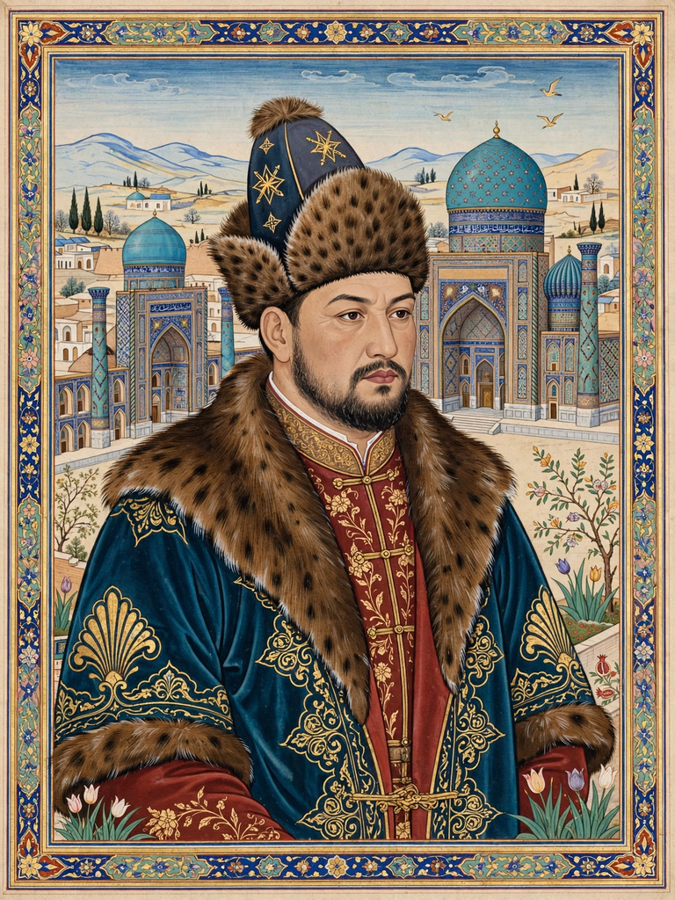

| Muhammad Shaybani Khan | |
|---|---|
 | |
| Born | 1451 Central Asian steppe |
| Died | 2 December 1510 (aged 58–59) Merv |
| Reign | Khan of the Uzbeks, 1500–1510 |
| Dynasty | Shaybanid |
Muhammad Shaybani Khan (1451 – 2 December 1510) was a Shaybanid Uzbek khan, a descendant of Shiban, son of Jochi, who conquered the Timurid lands of Transoxiana and Khorasan and founded the Khanate of Bukhara. He was the principal Central Asian adversary of Babur, the future founder of the Mughal Empire.
Shaybani was the grandson of Abu'l-Khayr Khan, ruler of the Uzbek confederation. After his father's death he spent years as a mercenary and adventurer in Transoxiana, serving Timurid princes in Samarkand and Bukhara and acquiring the education reflected in his own Turkic poetry and his treatise on prosody.
Between 1500 and 1507 Shaybani seized Samarkand (driving out the young Babur after the battle of Sar-i Pul), Bukhara, Tashkent, Khwarizm, and finally Herat, extinguishing Timurid rule in the region. He made Bukhara his capital and patronised Sunni Islam against Safavid Persia.
In 1510 Shah Ismail I of Persia invaded Khorasan. Shaybani was defeated and killed at the Battle of Merv on 2 December 1510; legend holds that Ismail had his skull mounted in gold as a drinking cup. His dynasty, the Shaybanids, retained Bukhara for the rest of the century.